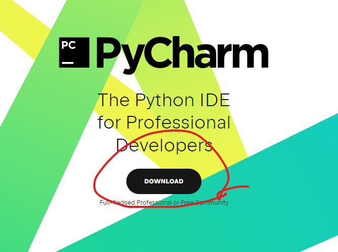
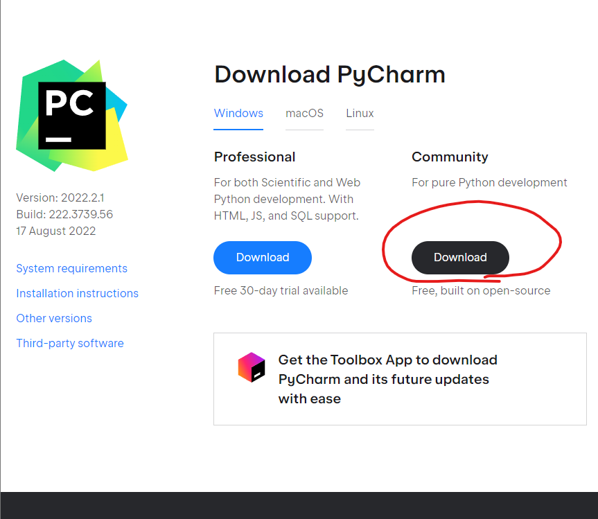
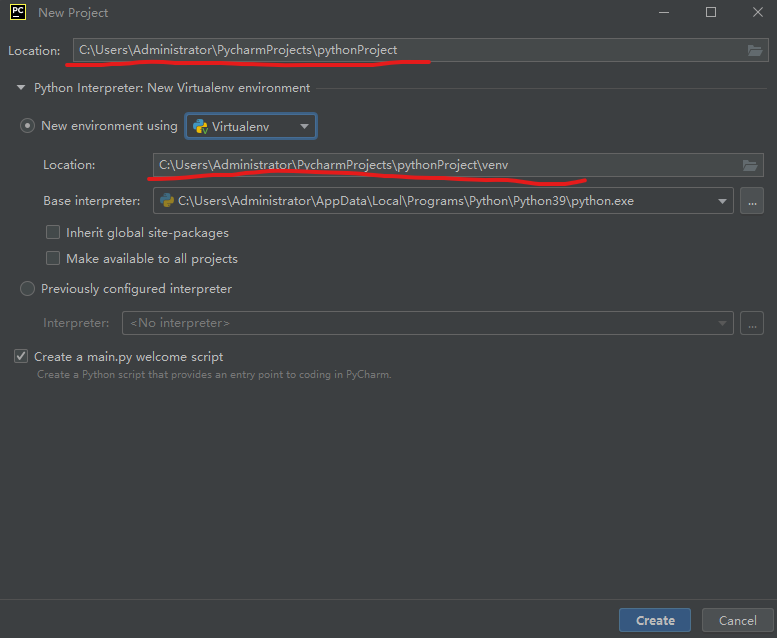
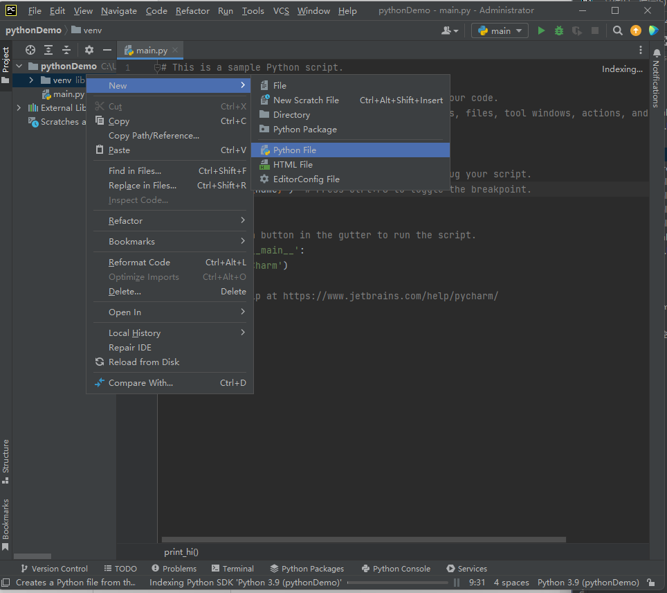
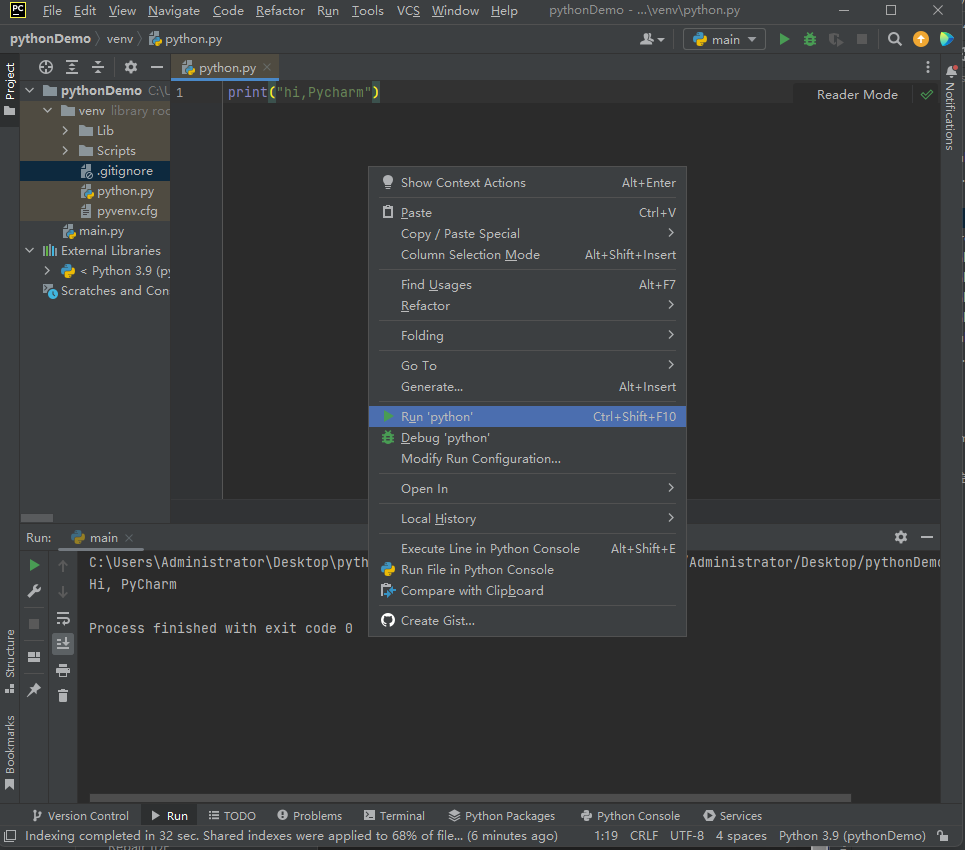

编辑器
本教程以Pycharm 为例,需配合python使用
点击Download,下载社区版(community)


选择安装路径,全部勾选其他选项,install安装
点击New Project创建项目
分别设置 location: 项目路径,和python编译器位置,点击create创建项目

可清除main.py文件内容或重新创建python文件。在venv目录下创建Python File文件命名为.py文件

输入python("hi,pycharm"),点击右上角绿色箭头或鼠标右键run运行。控制台将会输出信息
